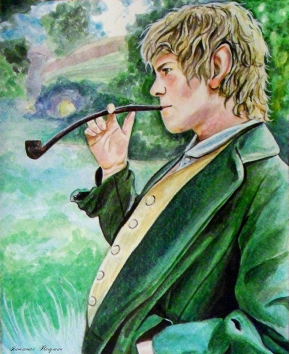

Kim jest?
Meriadok Brandybuck, znany jako Merry, to jeden z członków Drużyny Pierścienia i bliski przyjaciel Froda Bagginsa oraz Peregrina Tuka. Pochodzący z zamożnej rodziny hobbitów z Bucklandu, Merry jest inteligentnym, odważnym i praktycznym hobbitem, który odegrał ważną rolę w wydarzeniach Władcy Pierścieni J.R.R. Tolkiena. Na początku podróży Merry, podobnie jak inni hobbici, był niedoświadczony i nie do końca zdawał sobie sprawę z ogromu niebezpieczeństwa, które ich czekało. Jednak z czasem udowodnił, że jest nie tylko lojalnym towarzyszem, ale również sprytnym strategiem i odważnym wojownikiem. Jego wrodzona ciekawość i zdolności organizacyjne pomogły Drużynie w wielu trudnych sytuacjach. Merry wykazał się szczególną odwagą podczas Wojny o Pierścień. Po rozdzieleniu Drużyny wyruszył z Eomerem i Rohirrimami do Edoras. Tam zdobył uznanie króla Théodena i towarzyszył Rohirrimom w bitwie na polach Pelennoru. W decydującym momencie Merry odegrał kluczową rolę w pokonaniu Króla Upiorów – najpotężniejszego z Nazgûli – wspólnie z Éowiną, przebijając jego ciało i przyczyniając się do jego zniszczenia. Ten akt odwagi pokazał, że nawet najmniejsi mogą wpłynąć na losy świata. Po zakończeniu wojny Merry wrócił do Shire, gdzie pomógł w wypędzeniu wojsk Sarumana w wydarzeniu znanym jako "Czyszczenie Shire". Jego odwaga i doświadczenie zdobyte podczas wojny uczyniły go jednym z liderów hobbitów, którzy odbudowali Shire. Merry stał się szanowaną postacią w społeczności i pełnił rolę przywódcy swojej rodziny, zdobywając uznanie zarówno wśród hobbitów, jak i innych mieszkańców Śródziemia